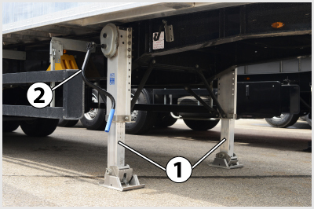

- 264. A lengéscsillapítók hibája esetén... #704418
- a kerekek és az útfelület kapcsolata romlik, csökken a jármű stabilitása, a gumiabroncsok kopása pedig rendellenessé válik.
- nehezebbé válik a sebességváltás.
- megnő a fékbetétek kopása.
- csökken a jármű gyorsítóképessége.
- 265. A pótkocsi kitámasztólábait véletelenszerű lekapcsolódás ellen... #704433
- megfelelően rögzíteni kell.
- helyretoló rugó rögzíti.
- biztosítókötél rögzíti.
- nem kell külön rögzíteni, mert azok amúgy is fixen a pótkocsi alvázához vannak rögzítve.

- 266. A képen látható 1-es jelű alkatrész... #704598
- a légrugó.
- a lengéscsillapító.
- a légtartály.
- a fékműködtető munkahenger.
- 267. A képen látható 2-es jelű alkatrész... #704599
- a lengéscsillapító.
- a légrugó.
- a légtartály.
- a fékműködtető munkahenger.

- 268. A képen egy... #704611
- pótkocsi emelhető légrugós felfüggesztésű futóműve látható.
- tehergépkocsi légrugós felfüggesztésű hajtott hátsó futóműve látható.
- tehergépkocsi légrugós felfüggesztésű kormányzott mellső futóműve látható.
- pótkocsi emelhető laprugós felfüggesztésű futóműve látható.
- 269. A képen látható 2-es jelű alkatrész... #704613
- a merev futómű hídteste.
- a független kerékfelfüggesztés lengőkarja.
- az alváz kereszttartója.

- 270. A képen látható pótkocsin a 3-as jelű alkatrész... #704668
- a támasztóláb.
- az alváz hossztartója.
- az alváz kereszttartója.

- 271. Mi a képen látható emelő-süllyesztő szelep rendeltetése? #704670
- A jármű felépítményének megfelelő magassága állítható be vele rakodás, cserefelépítmény, konténer le- és felvétele, illetve pótkocsi felkapcsolása esetén.
- A jármű szintmagassága szabályozható vele azért, hogy alkalmazkodni lehessen a különböző út- és terepviszonyokhoz.
- A jármű szintmagassága szabályozható vele azért, hogy a különböző országokban érvényes eltérő előírásokhoz alkalmazkodni tudjon a jármű.
- A billenő felépítmény mozgatása végezhető vele.

- 272. A képen látható félpótkocsi 1-es jelű, bal- és jobboldali támasztólábai... #704700
- együtt mozgathatók a menetirány szerinti jobb oldalon elhelyezett 2-es jelű kézikarral.
- együtt és külön-külön is mozgathatók.
- külön-külön mozgathatók a 2-es jelű kézikarral, illetve annak baloldali párjával.
- 273. Általában milyen a tehergépkocsik és pótkocsijaik kerékfelfüggesztése? #704716
- Általában kapcsolt kerékfelfüggesztésű (merev hidas).
- Általában kettős kereszt-lengőkaros felfüggesztésű.
- Általában ferde- vagy hosszlengőkaros.
- Általában rugózatlan.
- 274. Az emelhető segédfutómű felemelésével... #704717
- csökken a gördülési ellenállás, a tüzelőanyag-fogyasztás és a gumiabroncsok kopása, illetve növelhető a vele párban futó hajtott tengely terhelése.
- kedvezőbb teherelosztás biztosítható az első és a hátsó tengelyek között.
- nagyobb stabilitás biztosítható a terepen mozgó jármű számára.
- nő a jármű terhelhetősége.
- 275. Gépjárműveken és pótkocsikon általában milyen típusú lengéscsillapítót alkalmaznak? #704811
- Hidraulikus, teleszkópos lengéscsillapítókat.
- Lamellás, súrlódásos lengéscsillapítókat.
- Hidraulikus, karos lengéscsillapítókat.
- Mágneses lengéscsillapítókat.
- 276. Milyen típusú rugózással valósítható meg az alvázmagasság-állítás? #704812
- Légrugózással.
- Laprugókkal.
- Csavarrugókkal.
- Gumirugókkal.
- 277. Mi a feladata a pótkocsi támasztóláb(ak)nak? #704813
- Lekapcsolt központi tengelyes és nyerges pótkocsik stabilitásának és vízszintes helyzetének a biztosítása, illetve a szerelvény összekapcsolásakor a pótkocsi magasságának beállítása.
- Kanyarodáskor a túl nagy oldaldőlés, illetve a pótkocsi felborulásának megakadályozása.
- A pótkocsi esetleges leszakadása esetén a pótkocsi gyors és biztonságos megállítása.
- A pótkocsi túlterhelése esetén az alváz derformációjának megakadályozása.
- 278. Mikor célszerű tartósan felemelni az emelhető segédtengelyt? #704814
- Terheletlen, illetve kis terhelésű járműnél.
- Maximálisan terhelt járműnél.
- Meghibásodott jármű vontatásakor.
- Túlterhelt jármű esetén.
- 279. Milyen járműveknél alkalmaznak segédrugóval kombinált laprugót? #704815
- Azoknál, melyeknél nagy a jármű saját tömege és össztömege közötti különbség.
- Azoknál, melyeknél lágy rugózás megvalósítása a cél.
- Azoknál, melyeknél alváz magasságállítást kívánnak megvalósítani.
- Azoknál, melyeknél a főrugó törése esetén is biztosítani kell a rugózás működőképességét.
- 280. Milyen rugózási rendszerek terjedtek el leginkább a korszerű nehéz haszonjárműveknél? #704816
- Laprugós és légrugós.
- Tekercs és torziós rugós.
- Hidarulikus és gázrugós.
- Gumirugós.
- 281. A képen látható emelhető pótkocsifutóművet a rendszernek... #714586
- automatikusan le kell engednie, ha ezt a többi futómű terhelése szükségessé teszi.
- automatikusan fel kell emelnie, ha ezt a többi futómű terhelése lehetővé teszi.
- 282. A képen látható 1-es jelű karral... #714587
- a jármű felépítményének emelése és süllyesztése végezhető.
- a billenő felépítmény mozgása vezérelhető.
- a jármű terhelésének megfelelő fékerőhatárok állíthatók be.
- a jármű terhelésének megfelelő rugózás állítható be.
- 283. Mi történik akkor, ha a lengéscsillapítók állapota nem megfelelő, és nem képesek hatásosan csillapítani a lengéseket? #714624
- Jelentősen leromlik a gépjármű menetstabilitása és az utazás kényelme, valamint a gumiabroncsok kopása is rendellesé válik, illetve megnövekszik.
- Kényelmetlenebbé válik az utazás a gépkocsiban.
- Valamelyest megnövekszik a gumiabroncsok kopása.
- Nehezebbé válik a sebességváltás.
- 284. A képen látható 5-ös jelű alkatrész a... #714625
- lengéscsillapító.
- keresztstabilizátor.
- nyomtávrúd.
- hídtest.
- 285. Mire szolgálnak a képen látható félpótkocsi 1-es jelű támasztólábai? #714661
- A lekapcsolt pótkocsi stabilitásának biztosítására, közel vízszintes helyzetének beállítására, felkapcsoláskor pedig felhasználhatók a királycsap megfelelő magasságának beállítására is.
- Túlterhelt pótkocsi esetén megakadályozzák a pótkocsi alvázkeretének maradandó deformációját és ezzel annak károsodását.
- Kerékcsere esetén ezzel emelhetők fel a pótkocsi cserélendő kerekei.
- 286. A képen látható emelő-süllyesztő szelep 2-es jelű tábláján a 4-es jelű helyzetek... #721157
- a süllyesztéssel, vagy emeléssel beállított helyzet megtartását jelentik.
- a normál rugózást jelentik.
- a folyamatos emelést jelentik.
- a folyamatos süllyesztést jelentik.
- 287. Mi a célja az alvázmagasság állításának? #721158
- Félpótkocsik fel- és lekapcsolásának, illetve rakodási feladatoknak (pl. konténerek fel- és levétele) a megkönnyítése.
- A jármű hasmagasságának növelése rossz minőségű úton, illetve légellenállásának csökkentése nagy sebességű haladásnál.
- A rugó úthosszának megnövelése, ezáltal a menetkényelem javítása.
- A járműmagasság vonatkozásában a különböző országokban érvényes eltérő előírások teljesíthetősége.
- 288. A lengéscsillapítók meghibásodására következtethetünk, ha... #721196
- a gépkocsi menet közben jelentősen beleng és a kerékfelfüggesztés esetenként az ütközőjére felüt.
- nehezebbé válik a sebességváltás.
- az első kerekek szitáló, ugráló mozgása miatt a kormánykerék erősen rángat, a jármű nehezen irányítható.
- a gumiabroncsok oly mértékben felmelegednek, hogy akár ki is gyulladhatnak.
- 289. A képen látható 3-as jelű alkatrész... #724192
- az emelhető pótkocsi futómű emelését végző légrugó.
- az emelhető pótkocsi futóműjének rugózásáért felelős légrugó.
- a pótkocsi egyik légtartálya.
- a lengéscsillapító.
- 290. A képen látható emelő-süllyesztő szelep 2-es jelű tábláján a 3-as jelű helyzet... #724193
- a normál rugózást jelenti.
- a folyamatos emelést jelenti.
- a folyamatos süllyesztést jelenti.
- a süllyesztéssel, vagy emeléssel beállított helyzet megtartását jelenti.
- 291. Miért alkalmaznak a tehergépkocsiknál általában kapcsolt (merev hidas) kerékfelfüggesztést? #724212
- Mert egyszerűbb, olcsóbb és nagy terhek elviselésére alkalmas.
- Mert nagyobb sebesség elérését teszi lehetővé.
- Mert lágyabb rugózást lehet vele megvalósítani.
- Mert ebben a kategóriában hajtott futóművet csak így lehet kialakítani.